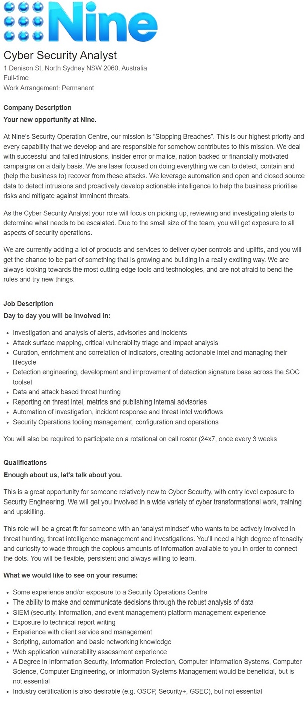
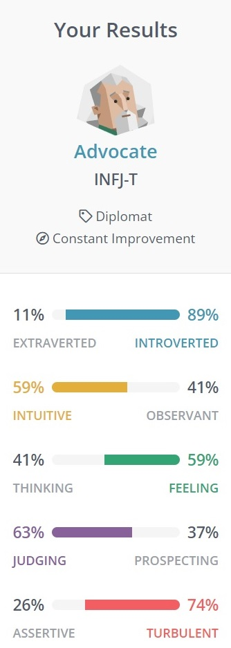

Personal Information
name: Robert Ricketts
student ID: s3964974
I was born on 27 July 1972. I was born 10 weeks early and only weighed 790 grams. My parents were told that I was not developed enough to survive or if I did, would not develop normally. I grew up in Perth, Western Australia and lived there until I was 23 years old. I finished year 12 and my first job was at the Commonwealth Bank. I always had an interest in helicopters, so saved up money to get my helicopter licence. The country was in a recession and helicopter jobs were extremely rare. I was told to get my airplane licence instead. I then spent the next 2 years paying for individual lessons and training to obtain my commercial pilot licence.
My first job as a pilot was flying tourists from Jandakot Airport Western Australia to Monkey Mia in small four seat aircraft. I slowly built-up hours and experience before moving to the Northern Territory to gain further experience and hours. I am now an Airline Captain with nearly 16,000 hours total experience flying a Boeing 737 domestically as well as short haul international.
Interest in IT
My interest in IT is primarily Cyber Security as well as networking. I have no formal qualifications at this point, but will be working on obtaining the necessary qualifications, buy starting a course with RMIT. Networking is quite a broad subject. In encompasses large data networks and centers, through to home and small office setups. From setting up a home server to managing enormous data centers that route traffic all over the world.
Cyber security is a rapidly growing and evolving, with new exploits almost daily. To defend networks and infrastructure from unauthorized access would be a challenging and rewarding career. Whether it be defending against an individual or state actors from accessing, changing, or destroying sensitive information or extorting money and interrupting normal business processes.
I grew up at a time when personal computers were not readily available. My first computer was the Commodore 64, which loaded programs via a tape drive. It also had a basic programming language, known as PET Basic or CBM Basic, which allowed the user to program and run simple commands and design or create simple games. A few years later, my family purchased an Intel based 386SX computer for home office and gaming use. It was a DOS based system, with basic commands required to load programs and manage limited memory.
From that point, I have always had an interest in computer systems, mainly for gaming. The early days of the world wide web created a new user experience, chat boards and the sharing of web sites or idea’s. I basically became the family computer technician, upgrading the system, fixing issues with dial up modems or recommending new components. This interest has continued throughout my adult life and now extended into the that of my children.
Although I know my way around the components that make up a modern personal computer or laptop, I have always struggled with the software side. Programming language for basic websites through to game servers utilizing SQL databases for in game inventory spawn. Combined with staying connected to the world wide web, created a need for basic network troubleshooting and connecting multiple PC’s in the house. From dialup modems, to cable and now NBN Fiber to the home. I currently manage three desktop systems, three laptops and a myriad other devices from mobile phones, tablets and smart home appliances. With more and more devices in the average household now requiring access via the internet, a greater understanding is required to deploy them safely and securely.
I wanted to take that basic understanding and experience and get formal qualifications thus increasing my knowledge and interest. Working full time, required a flexible and well respected university within the IT world. After some research, I discovered that RMIT offered distance based courses and support. Feedback received showed that RMIT had a strong desire for their graduates to receive world class knowledge as well as a strong relationship with companies needing graduates that have received the very best of education available. RMIT works with the industry to structure appropriate course information to allow graduates a greater chance of employment within IT.
I wanted to take that basic understanding and experience and get formal qualifications thus increasing my knowledge and interest. Working full time, required a flexible and well respected university within the IT world. After some research, I discovered that RMIT offered distance based courses and support. Feedback received showed that RMIT had a strong desire for their graduates to receive world class knowledge as well as a strong relationship with companies needing graduates that have received the very best of education available. RMIT works with the industry to structure appropriate course information to allow graduates a greater chance of employment within IT.
I hope to gain real world informative subject matter from my online tutors thus gaining the required knowledge and skills needed to pursue a career in IT Cyber Security. RMIT Graduate Certificate will allow me to demonstrate a strategic overview of complex issues in Cyber Security, develop the necessary communication skills to engage effectively with technical and non-technical audiences as well as being able to work autonomously and or part of a team.
Ideal Job
Junior Cyber Security Program Business Analyst
Link to the Nine News Position Advertisement
Nine News Cyber Security Position
Description
Although Cyber Security is not new, the required level of training, knowledge and expertise is a rapid growth industry. This is driven by the ever-increasing number of devices connecting to the online world and the prevalence of individuals attempting to disrupt normal operations by stealing sensitive information that can damage the reputation of the business.
A business needs well trained and knowledgeable employees that can prevent intrusions, detect intrusions quickly, managing a breach to the business and successful recovery of its systems and information. Analysis and investigation of potential and actual threats, reviewing alerts and escalating action depending on the level of the threat.
Skills I Need
The ideal candidate will require previous experience in a Security Operations Centre, be able to communicate effectively through written detailed reports which have been actioned after analysis of the threats against the business. A degree in Information Security, whilst not essential would be beneficial and would be the basis for being able to script, process automation as well as basic network management.
Skills I have
Although I have yet to formally complete my degree in Information Technology, I believe my current role as an Airline Captain puts me in good stead. Being able to work back of the clock hours, be self-autonomous, work in high stress environments within a team as well as manage complex tasks as an individual. The current academic pathway, introduction to information technology, Introduction to programming then user centered design will give me a grounding in the core requirements for the completion of a Bachelor of Information Technology and postgraduate in Cyber Security.
Learning Plan
Initial experience will be gained in similar roles as advertised, junior analyst in cyber security or in a help desk role in a larger corporate environment.
Personal Profile
Myers Briggs Type Indicator
Analysing the results of the Myers-Briggs test shows that I am an introvert, somewhat intuitive, judging, and Turbulent. What do these mean? I put others before myself and strive to ensure fellow student or co-workers thoughts and feelings come first. I am driven not by success or money but ideals including righting wrongs and upholding principles.
Strengths
I care about integrity, honesty but also caring and willing to listen, which generally leads to helping others first. Some of those traits are favorable when working in a team environment but can be a hindrance as suffering of fools or lies does not sit well. It also allows for self-autonomy and goal focus. Such traits can bring strength to group projects or teams, by helping others first. Cooperation, sensitivity and when needed independence, allows cohesiveness in achieving the goal or task at hand.
Team Composition
You invariably do not get a choice when selecting team members, whether it be for a university assessment or work-related project. Given that you would probably not know the other team members personality attributes to after the assessment or project has commenced, the only benefit would be understanding of other types and trying to work within those boundaries as best as possible.
Test 2
Learning Style
Primary Learning Style:Theorist:
Theorists like to think through problems in a logical manner. They value rationality and objectivity and like to assimilate disparate facts into coherent theories. They are disciplined, aiming to fit things into a rational order. They are often keen on basic assumptions, principles, theories, models and systems.
Test 3
Personality Test
Introvert, prone to mood swings, but high in agreeableness. Also conscientious with a moderate to high intellect. These are based on five factors as recorded in the test.
Project Idea
Overview
The project idea will consist of an app within android and apple eco systems. It will interface with Android Auto and Apple Car Play to display the location and serviceability of electric vehicle (EV) charging stations within Australia. The app itself will gather information from approved resources, up to date status and the output of the charging station to suit the vehicle being driven. Vehicle range from onboard vehicle systems will interact with the app and display distance to go to suitable charging point and whether it is within range of the current EV’s charge status. Users will be able to select or deselect charging stations that meet the vehicles standard.
Motivation
Due to the enormous size of Australia and the increasing number of EV’s currently owned as well as future sales, the requirement for the reliable and up to date status of charging points is required. Australia is 7.7 million square kilometers, with population densities confined to urban sprawl located within coastal regions. Currently there are only 3000 public chargers in Australia, with 470 supercharging ones. As the vehicles evolve and available range increases, more and more owners will seek to drive longer distances, including many hundreds of kilometers. Up to date information and the status of each charging station is important to be able to plan longer vehicle trips as well as to ensure the EV is within range of a suitable charger that can charge the vehicle, so the journey can continue.
Description
The IT project consists of an application (app) that displays the location and status of the different type of electrical vehicle (EV) charging stations located within a user defined geographical area.
The app would be available on user devices such as smart phones and tablets based on Android and Apple hardware and software.
Useability and controllability via touch or voice. “Hey Siri, show me the nearest charging station”. The user will be able to select a specific charger type that is compatible with the electrical vehicle, the status of the charging station and network as well as distance to the charging station. The status of the charging station will be able to be updated via cloud through the corporate provider of the charging system as well as other users. That is, other users will be able to note the status of the charging station in real time with the information being stored securely on a cloud-based platform, which is separate to the app deployment and install platform.
Information will be displayed optically via the platform screen which will include: distance to charging station, route to charging station, status of the charging station and current range of the EV.
Information will be derived from onboard vehicle systems: speed, current charge state and position or location. The app will use that information plus global positional system data and cloud based information to provide the required information to the user.
Should the nearest charging station be unavailable, not working or not yet deployed the user will be shown an alert plus written information thereby providing the user the option to choose a different charging station location based on available status and current vehicle range. It is important that the end user be made aware of the status and availability of the user selected charging network. That status will also need to include availability, is it currently in use and the time it will take to charge the vehicle at current provided output and cost.
The app will need the required authority and accessibility of the vehicle manufacturer and charging network to be reliable and suitable. Although certain vehicle manufacturers already provide such information for brand specific charging stations, the availability and suitability of third-party charging stations will need to be encouraged. This will allow great flexibility the app user as well as promote the usability of EV’s within geographical locations that have large distances combined with smaller population densities.
As EV battery technology improves and the number of charging stations increases the app will provide updates in both real time and future software revisions.
App errors or bugs will need to be easily communicated by the user to the developer and will also need to be easily addressed and fixed by the developer.
App security and user information will need to be protected to ensure user information is not used for any other purpose not intended. Data and user information will need to be encrypted, stored directly on the device to operate as well as cloud based to provide the necessary data to function.
Tools and Technologies
Android Kotlin
Android Kotlin, is interoperable with Java programming language. Kotlin coroutines streamline asynchronous programming, making common tasks and database updates simple. Coroutines within Kotlin are lightweight, have fewer memory leaks, built in cancellation support. Available libraries allow for extensions and full coroutine support:
- Expressive and concise
- Safer Code.
- Interoperable.
- Structured concurrency.
Source:Android kotlin
Apple iOS Swift
Apple IOS Swift language allows for the development and creation of apps for IOS, iPadOS, macOS, tvOS and watch OS. It is designed for safety, fast and powerful and open source. It uses modern and straightforward syntax. It uses the following:
- Generics that are powerful and simple to use.
- Protocol extensions that make writing generic code easier.
- First class functions and a lightweight closure syntax.
- Fast and concise iteration over a range or collection.
- Tuples and multiple return values.
- Structs that support methods, extensions and protocols.
- Enums can have payloads and support pattern matching
- Functional programming patterns.
- Built in error handling.
Source: Apple iOS Swift
Basic tools include a virtual or physical device for both Android and Apple, plus a text editor for html, coding such as Atom or Notepad++. Additionally a GITHUB account to save project data and code.
Skills required
Require coding and programming skills and education. Education through RMIT courses including DevOps, Front End Web Developer and Bachelor of Computer Science, Software Development. The RMIT course gives you an excellent foundation of the required technical knowledge and necessary skills to develop applications or work within a corporate environment. RMIT works closely with numerous companies in collaboration of education requirements and industry needs.
Basic skills would include understanding the use of GITHUB, HTML, Android Kotlin and Apple IOS Swift. A good understanding of deployment methods for both Android and Apple are required. The app would be hosted on the Google Play Store and Apple App Store as a cloud resource.
Outcome
The app will be able to share the up-to-date status of charging stations with others users as well as other party sites, such as NRMA. Users will be able to select the current charger location, charger ID and upload the current usability status in real time. Other users could rate the information as well as confirm the status. It will give owners of electric vehicles a greater level of information at their fingertips to ensure they are within range of a suitable charger, as well as be able to plan their trip in real time. It will increase safety and lead to less concerns regarding the possibility that the charger they plan on using will be useable before arriving. As more EV’s are sold and the number of charging stations increase, the database can be updated as required. The status and availability can be brand or type specific. The app will be available on both android and apple systems as well as not be vehicle brand specific or provider specific as is currently the case